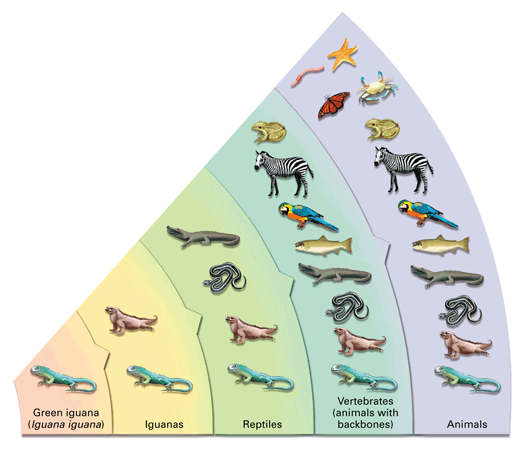

Objectives
- Use the term species in discussing life's diversity.
- Explain the basic strategy biologists use in classifying organisms.
- Identify a characteristic that separates the domains Bacteria and Archaea from the domain Eukarya.
Key Terms
Biology explores a vast frontier. As you learned in Concept 1.1, biology extends from the giant scale of the biosphere down to the molecular world within a cell. But the scope of biology also includes the broad diversity of organisms that inhabit Earth.
Life's Diversity of Species
On your next walk through your neighborhood, notice how many kinds of living things you can spot. You may observe various insects, spiders, birds, and plants. Now suppose you're walking in a tropical rain forest. The enormous variety of life overloads your senses with sights, sounds, and smells. Insects crawl, jump, and fly everywhere—their hum and buzz surround you. Now and then, they are drowned out by loud calls of birds or howls of monkeys. You struggle through a dense tangle of plants. Showy orchids fill the air with sweet fragrance. Colorful mushrooms poke up from the logs they are decomposing. Inspecting the forest floor with a magnifying glass, you find an astonishing assortment of organisms so tiny that they would otherwise escape notice.
Each different type of organism you observe during either walk is an example of a species, or a distinct form of life. Biologists have so far identified more than 1.5 million species, and new species are discovered almost daily. This growing catalog of known life forms includes approximately 5,000 species of bacteria; 8,600 species of birds; 30,000 species of fishes; 100,000 species of fungi; 280,000 species of plants; and 1,000,000 species of insects, by far the most diverse of all animals. There are also thousands of species of amphibians, reptiles, and mammals. Tropical rain forests are especially rich in species diversity, as you will read more about later.
Classifying Life: The Basic Idea
Humans have a tendency to place items in categories. For instance, perhaps you organize your music collection according to artist. And then maybe you group the various artists into even broader categories, such as study-time music, dance music, and exercise music. This behavior may explain why one of the oldest branches of biology is the study of classification—organizing similar species into larger groups. Grouping species probably seems natural to you. You may speak of butterflies, recognizing that there are many types (species) of butterflies. You may sort groups of animals into broader categories, such as the insect group (which includes groups such as ants and bees as well as butterflies). And you probably recognize that insects and reptiles, as different as they are, both belong to the larger animal group, which in turn is very different from the plant group.
You can compare an organism's biological classification to a postal address. A postal address describes a location by using broader and broader categories. For example, an address specifies a particular house or apartment number, but also a street (which includes many houses), a city (which includes many streets), and a state (which includes many cities).
Figure 1-6 illustrates the basic idea of grouping species into broader and broader categories using the animal found on your textbook's cover (the species Iguana iguana) as an example. This species is one of many large lizards called iguanas. All iguanas belong to a larger group of animals called reptiles, and so on. You'll learn more about the complete system of classifying organisms in Chapter 15.

|
Figure 1-6
A green iguana (Iguana iguana) shares many characteristics with other species of iguanas, but fewer with other reptiles such as snakes or alligators. As categories of organisms become broader, the organisms in the category are more diverse. |
The Three Domains of Life
In classifying life forms, many biologists call the broadest category a domain. According to this classification scheme, there are three domains: Archaea, Bacteria, and Eukarya. The organisms of domains Archaea and Bacteria are very tiny. Most of these organisms are unicellular, meaning that their entire bodies consist of just a single cell. These cells are relatively simple. For example, they lack nuclei—their DNA is not separated from the rest of the cell. These cells without nuclei are called prokaryotic cells. Though domains Bacteria and Archaea both consist of prokaryotic organisms, they are otherwise very different from each other, as you'll learn in Chapter 16.
Biologists divide each domain into subgroups called kingdoms. For example, domain Eukarya includes four kingdoms: protists, fungi, plants, and animals. All the organisms of these four subgroups consist of eukaryotic cells. Eukaryotic cells contain nuclei that separate DNA from the rest of the cell. Like the prokaryotes, many protists and certain fungi are unicellular and microscopic in size. But other protists, most fungi, and all animals and plants are multicellular. Multicellular organisms are made of many cells, not just one. Your own body, for example, has trillions of cells.
You will learn much more about the diversity of life in later chapters. The last section of this chapter will focus on some basic themes that apply to all species, from prokaryotes to animals, and to all levels of organization, from the biosphere to cells.
Concept Check 1.2
1. Explain the relationship between the terms species and organism.
2. Explain two different ways that you could classify the following items: banana, lemon, sandwich, milk, orange, meatball, salad.
3. Explain the main difference between organisms of the domains Bacteria and Archaea and organisms of the domain Eukarya.